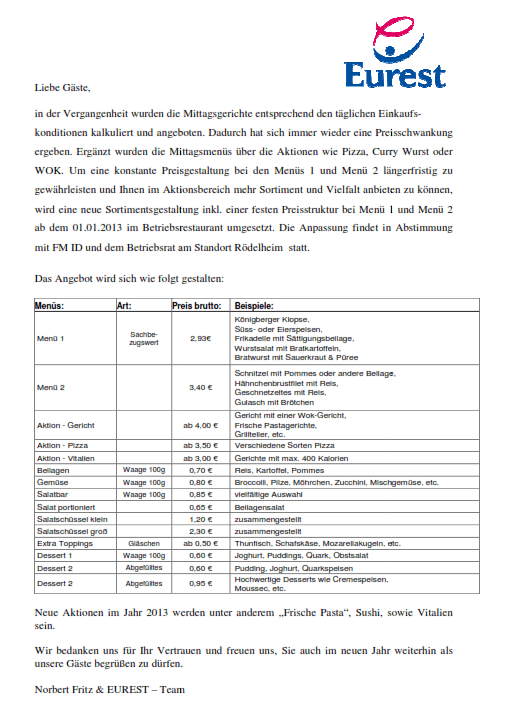

CW16: Di 23.04.2019 08:44-------------------------------------------------------------------------------------------------------------------
Am 15.4.2019 wurde für einen Grossteil der Smartphonenutzer hier am Standort die Synchronisation des Adressbuchs von Notes auf Outlook umgestellt.
Die für Sie wichtige Dokumentation finden Sie hier :
https://cws2.conti.de/content/00007821/Public_Library/Active%20Sync/ActiveSync%20Settings%20EN.pdf
Di 15.03.2016 09:15
TU Darmstadt
cont29ae5c66@gast
K8q04ECXh
Di 09.02.2016 10:37
Arbeitstage 2016 253 Tage
(253 Tage -30 Urlaubstage) * 8 h/Tag = 1784 h
1784 h / 12 Monate = 148.6 h
Do 16.04.2015
RAM/ROM-Abschätzung für Dirk Fröhlich
HAF-Projekt Ausgangszustand:
Odometrie Flash: 6380 bytes
RAM: 1796 bytes
Lat Flash: 65296 bytes
RAM: 13440 bytes
Statistik mit allen Modulen:
Use statistics of the different address ranges:
APPL_FLASH 0x00020000-0x000fffff (917504 bytes = 896 KB)
used: 0x00020000-0x0007619c (352669 bytes = 345 KB) 38.44%
SF_REGISTERS 0x00800000-0x00803fff ( 16384 bytes = 16 KB)
used: 0x00800000-0x008011ff ( 4608 bytes = 5 KB) 28.12%
RAM 0x00804000-0x0082fedf (179936 bytes = 176 KB)
used: 0x00804008-0x008140eb ( 65764 bytes = 65 KB) 36.55%
SPEC_VARS 0x0082ffa0-0x0082ffaf ( 16 bytes = 1 KB)
used: 0x0082ffa0-0x0082ffa5 ( 6 bytes = 1 KB) 37.50%
APPL_BOOT_RAM 0x0082ffb0-0x0082ffef ( 64 bytes = 1 KB)
used: 0x0082ffb0-0x0082ffef ( 64 bytes = 1 KB) 100.00%
ohne Odometrie-Modul:
Use statistics of the different address ranges:
APPL_FLASH 0x00020000-0x000fffff (917504 bytes = 896 KB)
used: 0x00020000-0x000748b0 (346289 bytes = 339 KB) 37.74%
SF_REGISTERS 0x00800000-0x00803fff ( 16384 bytes = 16 KB)
used: 0x00800000-0x008011ff ( 4608 bytes = 5 KB) 28.12%
RAM 0x00804000-0x0082fedf (179936 bytes = 176 KB)
used: 0x00804008-0x00813e37 ( 65072 bytes = 64 KB) 36.16%
SPEC_VARS 0x0082ffa0-0x0082ffaf ( 16 bytes = 1 KB)
used: 0x0082ffa0-0x0082ffa5 ( 6 bytes = 1 KB) 37.50%
APPL_BOOT_RAM 0x0082ffb0-0x0082ffef ( 64 bytes = 1 KB)
used: 0x0082ffb0-0x0082ffef ( 64 bytes = 1 KB) 100.00%
ohne Odometrie- und long-Modul
APPL_FLASH 0x00020000-0x000fffff (917504 bytes = 896 KB)
used: 0x00020000-0x0006c44c (312397 bytes = 306 KB) 34.05%
SF_REGISTERS 0x00800000-0x00803fff ( 16384 bytes = 16 KB)
used: 0x00800000-0x008011ff ( 4608 bytes = 5 KB) 28.12%
RAM 0x00804000-0x0082fedf (179936 bytes = 176 KB)
used: 0x00804008-0x00813733 ( 63276 bytes = 62 KB) 35.17%
SPEC_VARS 0x0082ffa0-0x0082ffaf ( 16 bytes = 1 KB)
used: 0x0082ffa0-0x0082ffa5 ( 6 bytes = 1 KB) 37.50%
APPL_BOOT_RAM 0x0082ffb0-0x0082ffef ( 64 bytes = 1 KB)
used: 0x0082ffb0-0x0082ffef ( 64 bytes = 1 KB) 100.00%
ohne Odometrie-, long- und lat-Modul
APPL_FLASH 0x00020000-0x000fffff (917504 bytes = 896 KB)
used: 0x00020000-0x0005c53c (247101 bytes = 242 KB) 26.93%
SF_REGISTERS 0x00800000-0x00803fff ( 16384 bytes = 16 KB)
used: 0x00800000-0x008011ff ( 4608 bytes = 5 KB) 28.12%
RAM 0x00804000-0x0082fedf (179936 bytes = 176 KB)
used: 0x00804008-0x008102b3 ( 49836 bytes = 49 KB) 27.70%
SPEC_VARS 0x0082ffa0-0x0082ffaf ( 16 bytes = 1 KB)
used: 0x0082ffa0-0x0082ffa5 ( 6 bytes = 1 KB) 37.50%
APPL_BOOT_RAM 0x0082ffb0-0x0082ffef ( 64 bytes = 1 KB)
used: 0x0082ffb0-0x0082ffef ( 64 bytes = 1 KB) 100.00%
Do 11.12.345 17:58:46

Mi 10.12.344 09:06:58
MKS-Antrag
CA0000744_MKS_Integrity_Manager_standalone_7.6_2005.0.0.0_ENU
Mi 26.11.330 10:29:12
Für November werden zusätzlich 55 Stunden gebucht
0 Reststunden
Fr 31.10.304 12:19:47
Für Oktober werden zusätzlich 55 Stunden gebucht
110 - 55 = 55 Rest
Mo 29.09.2014 13:22:32
Stunden Rückmeldung Es fehlene vom August 168 Stunden.
Für September wurden für August 56 Stunden vom August miteingetragen, 2 Tage Urlaub und 40 Stunden Proreta
168 - 58 = 110 Rest
Es verbleiben für Oktober und November 112 Stunden, davon 13 Tage Urlaub und 8 Stunden HAF
Mo 15.09.2014 09:33:32
SoftwareFirmenlizenzen
Sehr geehrter Herr Lauer,
die Kosten sind in der Regel Anwenderbezogen.
Für jede Software wird einmal pro Jahr ein Betrag ermittelt, der dann an die Anwender, die die Software nutzen, weiterverrechnet wird.
In Ihrer Mail wäre also die zweite Option richtig.
Was jetzt ihren speziellen Fall betrifft, so gibt es dazu mehrere Punkte zu beachten:
1) Sobald der Account des Anwenders, der z.B. Matlab verwendet hat, deaktiviert bzw. gelöscht wurde, werden auch die Einträge in Cusco für diesen Anwender deaktiviert.
2) Die Software selbst können Sie natürlich wie gewohnt mit den entsprechenden Windowswerkzeugen vom Rechner deinstallieren.
3) Es wäre vorteilhaft, eventuell auch den Application Owner zu informieren, damit er gegebenenfalls den Rechnernamen oder die UID's aus der Lizenzkonfirguration löschen kann. --> nutzen Sie dazu die HPSM Assignment Group, die in Cusco aufgeführt ist
Sollten die selben Anwender mittlerweile auf anderen Rechnern arbeiten, wird sich nichts ändern.
Sollte jedoch der eine oder andere die Abteilung gewechselt oder das Unternehmen verlassen haben, dann schicken Sie mir doch bitte die uids.
Ich prüfe dann nochmals nach, ob die Service wirklich deaktiviert wurden.
Um sich einen genaueren Überblick verschaffen zu können, können Sie auch unseren Daily Report nutzen. --> \\abhe443a\xfer\daily_report
Verwenden Sie bitte den Report mit dem aktuellsten Datum.
Sie können darin nach Ihrer Kostenstelle filtern und sehen dann, welche Kollegen welche Anwendungen nutzen (laut Cusco).
Ich hoffe, ich konnte Ihnen helfen und wünsche noch ein schönes Wochenende.
Bei Fragen können Sie mich auch gerne anrufen.
Hallo Herr Mang,
hierfür gibt es die IT Service Datenbank CUSCO. Für Fragen wenden Sie sich bitte an Jürgen Breedlove in Regensburg.
http://abhe443a.cw01.contiwan.com/cusco/Default.aspx
Mit freundlichen Grüßen/Best regards,
Von: Reiner Mang/fr/eu/au/cag
An: Peter Lauer/fr/eu/au/cag@CONTI07, Tobias Hendrich/usr/cag@conti07,
Datum: 28.08.2014 15:01
Betreff: Antwort: Löschen einer kostenpflichtigen Software
Hallo Herr Lauer
Die Fragen reiche ich an Tonias Hendrich, unseren Lizenzmanager weiter.
Mit freundlichen Gruessen / Best regards
Reiner Mang
Local IT Frankfurt A IT LIO FRA.
Gebäude / Raum: 20/20
Phone.: +49 69 7603-2998, Mail to: Reiner.Mang@continental-corporation.com
Sametime Konferenz : http://conference.conti.de/stmeetings/room/reiner.mang@continental-corporation.com/local-it-frankfurt
Intranet : http://c-inside.conti.de/intranet/c-inside/Surf_Regions/de_DE/Divisionen/automotive/04_cross_functions/automotive_it/040_dept/reg/eu/locs/de/frankfurt/homepage_frankfurt_de.html
<$$402!>
Von: Peter Lauer/fr/eu/au/cag
An: Reiner Mang/fr/eu/au/cag@CONTI07,
Datum: 28.08.2014 13:03
Betreff: Löschen einer kostenpflichtigen Software
Hallo Herr Mang,
können Sie mir bitte sagen, wie ich eine jährlich Kosten verursachende Software für die Kostenstelle wie zum
Beispiel Matlab von einem alten Rechner, der außer Betrieb gesetzt wird entfernen kann?
Beispielsweise wurde eine Matlab Lizenz über SSP6 Neue Anträge » Hardware & Software » Arbeitsplatz & Software » Software Installation
angefordert und daher für mich offenbar auf dem zu installierenden Rechner der Kostenstelle zugeordnet.
Mein Problem:
Es werden bei der SW-Installation mit SSP6 jährlich anfallende Kosten von mehreren tausend Euro für die Kostenstelle angegeben.
Frage:
Gelten die Kosten für jede Installation auf verschiedenen Rechnern und die Anzahl der Installationen wird gezählt?
oder:
Sind die Kosten User bezogen, wie in CUSCO angegeben, egal wie viele Lizenzen ein User nutzt und egal
auf wieviel Rechnern ein User Matlab installiert ?
Mit freundlichen Gruessen / Best regards,
Peter Lauer
Assistant Manager, Global Chassis Control
Advanced Engineering, CTZC
Continental
Division Chassis & Safety,
Guerickestraße 7, 60488 Frankfurt /Main
Phone: +49 (0)69 7603 - 2111
Telefax: +49 (0)69 7603 - 3816
E-Mail: peter.lauer@continental-corporation.com
<$$402!>
==============================================================================================
Di 10.09.2013 13:51:13
Ticket wegen Iphone Firmenapps gemacht, da durch Absturz alles weg ist:
Mo 22.02.2016 14:39
Erprobung in Griesheim
Cont3a76878b@gast
mf39q24bC
Interaction: SD412393459 was successfully created
Fr 18.01.2013 14:52:38
Mo 17.12.2012 11:09:45
neue Eurest-Preise

Mo 17.12.2012 09:15:48:
komisches E-Sign bekommen heute:
S-list Id: 2042921
S-list file: A2C00672300 Limited release until 20130131.pdf
Status: Approved
Group: CA RUBI
Explanation: This esign is to start the Deviation Approval for the TFT A2C00672300 which is going to be used 10th and due to the following topics the final release wont be ready for that day.
The current status is: The delta qualification of displays with changed cap-types on LG side is not Dec. 7th, 2102. The final PPAP delivery is expected in CW50.
In regards to the risks, unexpected function failures during HTOE test.
This risk release is limited until 31.01.2013.
Fr 16.11.2012 16:54:15
Beantragung AdminRechte für Studenten-Rechner FRL03535G:
Gründe:
Für Installation der Software CANalyser und OpenSplice, die zur Coniguard-Entwicklungs-Umgebung gehören, werden Adminrechte benötigt.
Thomas Berthold - Beantragen lokaler Admin
<NDL>
<REPLICA C1256C62:00490B22>
<VIEW OF38D46BF5:E8F08834-ON852564B5:00129B2C>
<NOTE OF1C943AA0:3CA38838-ONC1257AB8:003DCA92>
<HINT>CN=frlc001/OU=srvc/OU=eu/OU=au/O=cag</HINT>
<REM>Database 'Thomas Berthold', View 'Eingang', Document 'Beantragen lokaler Admin'</REM>
</NDL>